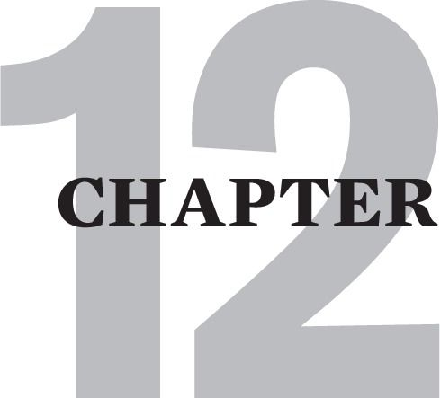

THE MAP: MANAGING THE ABANDONMENT DEPRESSION
Cptsd burdens us with a hair-trigger susceptibility to painful emotional flashbacks. Flashbacks, as we have seen, are layers of defensive reactions to the abandonment depression. These reactions include physical, behavioral, cognitive, emotional and relational responses to the reemerging sense of danger and despair that plagued our childhood abandonment.
This chapter presents a map of these layered, defensive reactions to abandonment pain. This map shows you which reactions are most important to work on at any given time. It includes a strategy for reducing harmful reactions that are no longer necessary. This strategy involves self-compassionately soothing yourself when you are trapped in fear and/or depression, so that you do not launch into intensified fear, toxic shame, critic attacks, or self-damaging 4F reactions.
Cycles Of Reactivity
This section presents a verbal diagram of the layering of our reactions in an emotional flashback. Experiences of depression and abandonment trigger us into fear and shame, which then activates panicky inner critic thinking, which in turn launches us into an adrenalized fight, flight, freeze or fawn trauma response.
This is how that reactivity takes place in a flashback. A survivor wakes up feeling depressed. Because childhood experience has conditioned her to believe that she is unworthy and unacceptable in this state, she feels anxious and ashamed. This in turn activates her inner critic to scare her with perfectionistic rants: “No wonder no one likes me. I’ve got to get my lazy, worthless ass out of bed or I’ll end up like that homeless, bag lady in the park!”
Retraumatized by her own inner voice, she then launches into her most habitual 4F behavior. She either lashes out domineeringly at the nearest person [Fight] – or she launches busily into anxious productivity [Flight] – or she flips on the TV and foggily tunes out or dozes off again [Freeze] – or she self-abandoningly redirects her attention to figuring out how to fix a friend’s problem [Fawn].
All this typically happens so quickly that we do not notice the fear and shame, or the inner critic. The first thing that we usually begin to notice in early recovery is that suddenly we are engaged in our most typical 4F response. As recovery progresses we become aware of the critic. Eventually this promotes mindfulness of the fear and shame that fuel the critic. And finally in later recovery, we become aware of the abandonment depression itself.
Unfortunately this dynamic also commonly operates in reverse. This can occur in early recovery when you suddenly notice that you have slipped back into a dysfunctional 4F behavior. This then triggers you into new self-attacking criticism, which then amps up your fear and shame. This in turn increases your abandonment depression as the process of self-abandonment runs riot.
Desperate to escape the deathlike feelings of the abandonment depression, the initial cycle revs up again. Depression creates fear and shame which fuels venomous critic attacks and launches you into fighting, fleeing, freezing or fawning.
Survivors can careen back and forth through these layered reactions creating perpetual motion cycles of internal trauma.
I believe this process also accounts for the spiraling down feeling that many survivors report having during intense flashbacks.
This is a diagram of these dynamics:
ABANDONMENT DEPRESSION  FEAR & SHAME INNER CRITIC 4Fs
FEAR & SHAME INNER CRITIC 4Fs
Let us look at a case example of how triggering works in the reverse direction. My mega-perfectionistic, flight-type client, Mario, came into our session five minutes late. It was the first time he had been late in two years of therapy.
Mario was in full-fledged flight, sweating from racing up the hill from his parking space a block away. He told me he just could not sit on the couch today. Could he please just pace in front of the couch. “I hate being late. I won’t tell you - please don’t ask – just how fast I was driving on the freeway!”
Mario compulsively paced, but this driven-ness was nothing compared to the speed of his obsessing, as he rattled off many versions of most of the inner critic attack programs listed in chapter 9.
To him, his being late was merely the tip of the iceberg of his defectiveness. As his rant against himself amped up, he increasingly scared himself with his own words, and shamed himself with his parents’ disgust.
Finally, seemingly exhausted, Mario collapsed on the couch, and launched into the first suicidal ideation I had ever heard from him. He had just landed in the pit of the abandonment mélange [depression encrusted with fear and shame] and was sinking to the bottom into a despairing depression of helplessness and hopelessness. This was the real helplessness and hopelessness that had so characterized his childhood.
Fortunately, I had been diligently planting seeds about his need to grieve over the last two years. For the first time since early childhood, the tears came, and it was the most moving monsoon I had witnessed in ages. He cried for the little forsaken boy he had been. He came home, via his pain, to being on his side. The long exile into self-abandonment was temporarily over for the first time that he could remember.
We were then able to look at the cycle of reactivity that had turned into a cyclone. Triggered by a traffic jam into the “terrible danger” of being late, Cptsd launched him into his flight response as he raced to get to my office. The flight response also immediately triggered the inner critic to attack him for his lateness and to catastrophize about the consequences. As it did he fell deeper and deeper into shame and fear, and then ultimately into the abandonment depression itself.
This time however, Mario broke the flashback with his tears, as his crying released his fear and shame. This in turn defueled his critic and allowed his body to begin releasing the hyperarousal of his flight response.
Had he not been able to do this, he most likely would have continued attacking himself with shame-fueled perfectionism and fear-fueled drasticizing. He would then have launched out of the session back to obsessively and compulsively racing through his day driven by his infinite to-do list.
The Layers Of Dissociation In The Cycle Of Reactivity
All the layered reactions in the cycle of reactivity are defenses against the abandonment depression. Each layer is also a defense against all of the other layers beneath it. As such, each layer is a type of dissociation. When we are triggered and lost in a 4F response, we fight, flee, freeze or fawn to disassociate ourselves from the painful voice of the critic. On a deeper layer, the critic is also distracting and disassociating us from our emotional pain. Moreover, fear and shame dis-associate us from the bottom layer - the terrible abandonment depression itself. Dissociation [the psychological term for disassociation], then, is the process of rendering all these levels less conscious or totally unconscious.
As recovery progresses and we learn to stay present enough to the critic to begin shrinking it, we become increasingly aware of the fear and shame that underlies it. With sufficient feeling into fear and shame, we notice that fear and shame cover up the deadened feelings of the abandonment depression itself. Learning to stay self-supportingly present to the feelings of this depression is the deepest level, bottom-of-the-barrel work of recovery. When we are able to do this, our recovering has reached a profound level.
Parental Abandonment Creates Self-Abandonment
Once again, we had to dissociate with these layered defenses because we were not developmentally capable of managing the pain of being abandoned. We could not tolerate feeling the fear, shame and inconsolableness of it. We could not use our anger and tears to release this shame and fear. We could not bear to stay tuned in to the incessantly persecutory critic, over which we were powerless. We could only fight, flee, freeze or fawn. Over time this elaborate cycle of self-abandonment became habitual.
Chronic emotional abandonment devastates a child. It naturally makes her feel and appear deadened and depressed. Functional parents respond to a child’s depression with concern and comfort. Abandoning parents respond to the child with anger, disgust and/or further abandonment, which in turn exacerbate the fear, shame and despair that become the abandonment mélange.
Deconstructing Self-Abandonment
Because of our parents’ rejection, the mildest hint of depression, no matter how functional or appropriate, can instantly flash us back into our original abandonment depression. The capacity to self-nurturingly weather any experience of depression, no matter how mild, remains unrealized. Our original experience of parental abandonment has morphed into habitual self-abandonment.
We can gradually deconstruct the self-abandoning habit of reacting to depression with fear and shame, inner critic catastrophizing, and 4F acting out. The mindfulness processes described below awaken the psyche’s innate capacity to respond with compassion to depression. Mindfulness also helps us metabolize the fear and shame that we were forced to feel about being depressed.
Ending our reactivity to depression is typically a long difficult journey. This is because our culture routinely humiliates us for any expression of depression. It pathologizes us as if we are violating our patriotic duty to be fully engaged in “the pursuit of happiness.”
Taboos about depression even emanate from the psychological establishment, where some schools strip it of its status as a legitimate feeling. For them, depression is nothing more than a waste product of negative thinking. Other schools reduce it simplistically to a dysfunctional state that results from the repression of somewhat less taboo emotions like sadness and anger. This is not to say that these factors cannot cause depression. It is to say that depression is a legitimate feeling that often contains the helpful and important information described below.
Depressed Thinking Versus Feeling Depressed
Healing progresses when we learn to distinguish depressed thinking [which we need to eliminate] from depressed feeling [which we sometimes need to feel]. Occasional feelings of listlessness and anhedonia [inability to enjoy our usual pleasures] are normal and existential. A modicum of ennui and dissatisfaction are part of the price of admission to life.
Moreover, depression is sometimes an invaluable herald of the need to slow down for rest and restoration. When depression is most helpful, it gives us access to a unique spring of intuition, such as that which informs us that a once valued job or relationship is no longer healthy for us. In such instances we feel depressed because some irreparable change has rendered some central thing in our lives detrimental to us. This functional depression is signaling us to let it die and move on.
Overreaction to depression essentially reinforces learned toxic shame. It reinforces the person’s belief that he is unworthy, defective and unlovable when he is depressed.
Sadly this typically drives him deeper into abandonment-exacerbating isolation.
Mindfulness Metabolizes Depression
Deep level recovery from childhood trauma requires a normalization of depression, a renunciation of the habit of reflexively reacting to it. Central to this is the development of a self-compassionate mindfulness. Once again, mindfulness is the practice of staying in your body – the practice of staying fully present to all of your internal experience.
The practice of mindfulness cultivates our ability to stay acceptingly open to our emotional, visceral and somatic experience without retreating into the cycle of reactivity. Steven Levine’s beautiful book, Who Dies, is an enlightening, jargon-less and easily accessible guide book on learning the practice of mindfulness.
Somatic Mindfulness
Because depression in Cptsd commonly morphs instantly into fear, early mindfulness work involves staying present to the physical sensations of fearful hyperarousal. This technique is also known as sensate focusing and it is the practice of feeling we explored in the last chapter. Mild sensations of fear are muscular tightness or tension anywhere in the body, especially in the alimentary canal. Tension in the jaw, throat, chest, diaphragm or belly also often correlates with fear. More intense sensations of fear are nausea, jumpiness, feeling wired, shortness of breath, hyperventilation, and alimentary distress.
Mindfulness also involves noticing the psyche’s penchant to dissociate from these uncomfortable sensations. Once again, dissociation can be the classical right-brain distraction of spacing out into reverie or sleep, or the left-brain, cognitive distraction of worrying and obsessing.
Over and over, the survivor will need to rescue himself from dissociation, and gently bring his awareness back into fully feeling the sensations of his fear. Although sensations of fear sometimes feel unbearable at first, persistent focusing with non-reactive attention dissolves and resolves them as if awareness itself is digesting and integrating them.
Somatic Awareness Can Therapeutically Trigger Painful Memories
Somatic awareness and sensate focusing sometimes opens up memories and unworked through feelings of grief about your childhood abuse and neglect. This phenomenon provides invaluable, therapeutic opportunities to more fully grieve the losses of childhood. If more pain comes up then you can digest on your own, please consider getting someone more experienced to help you with this process.
With considerable practice, you can begin to exhume from your fear an awareness of the underlying sensations of depression. These are hypo-aroused sensations that are subtle and barely perceptible at first. They may include heaviness, swollenness, exhaustion, emptiness, hunger, longing, soreness, or deadness.
These sensations are initially as difficult to stay present to as those of fear. With ongoing practice however, focused attention also digests them as they are integrated into consciousness. One of the biggest challenges of mindfully focusing on depression is to not dissociate into sleep. Sitting up straight in a comfortable chair can help to keep you awake and focused on fully feeling and metabolizing your depression.
As practice becomes more accomplished, these feelings and sensations of depression can morph into a sense of peace, relaxation and ease. On special occasions, they sometimes open to an underlying, innate core emotional experience of clarity, well-being and belonging.
Introspective Somatic Work
I began my journey of learning how to feel by devoting a half hour daily to feeling the sensations of my fear.
This was extremely difficult because I had survived my childhood with ADHD-like busyness. I had run daily marathons of activity to keep myself one step ahead of my fear and my shame-saturated depression. As an adult, I reduced this to half-marathons but I was still a busyholic, despite my relaxed persona. Tuning into how wired I was, was daunting. In my attempts to become more mindful, I was often exasperated by how frequently my awareness fled my body and went back into thinking or daydreaming.
In the first few months, my focus wavered wildly between feeling the tense sensations of my fear and being disrupted by inner critic thinking. I was assailed by a plethora of catastrophizing thoughts and visualizations. My critic repeatedly misinterpreted my fear as if I were still entrapped in my hazardous family.
My critic goaded me incessantly to launch into flight-mode. I was so itching to get going that I had strange tantalizing fantasies of cleaning my apartment, normally one of my least favorite things to do. In the first year of this practice, I frequently had to white-knuckle the handles on my chair to stay somatically present to my feelings. Otherwise, I would have been off and running into self-medicating with excessive adrenalization.
Dissolving Depression By Fully Feeling It
Gradually, my focused awareness began to metabolize my fear. Many months later, I was typically able to relax the tense fearful sensations of a flashback within ten minutes. As I became more successful at digesting my fear, I experientially discovered the rock bottom underlying core sensations of my abandonment depression itself.
Mindful merging with the subtle emotions and sensations of depression is the finishing tool of deconstructing self-abandonment. Over and over I focused on the sensations of my depression. Occasionally these sensations were intense, but more often they were very subtle. Often it was difficult to resist the urge to fall asleep, and many times I could not.
At other times, I noticed how instantly my depression scared me back into fear. Simultaneously the sensations of depression also triggered me into toxic shame. Often, I would witness myself echoing my parents’ contempt: “…bad, lazy, worthless, good-for-nothing, stick-in-the-mud, etc.”
Blessedly, with ongoing practice, I gradually learned to dis-identify from the toxic vocabulary of the critic. I also learned to stay awake most of the time. I then found myself more accurately naming these revisited childhood feelings: “Small, helpless, lonely, unsupported, unloved.” Over time, this in turn rewarded me with a profound sense of compassion for the abandoned child I was.
Moreover, I made the wonderful discovery that sensate focusing, when it has been well practiced and developed, is the ultimate thought-stopping technique. When the critic is especially loud and persistent, shifting your awareness from thinking to feeling your sensations is a potent way of coming home to a safer place. It is, as one survivor told me, “coming home to rest in the mother of your body.”
In my current recovery work, I most commonly apply this mindfulness technique to experiences of survival-mode depression. For me this low grade manifestation of the abandonment depression typically gets triggered by a few nights of poor sleep, which often decreases my energy level and dulls my ability to concentrate. Most of my life, this feeling experience provided rich fodder for my critic. Over the years however, increased mindfulness allows me to see that I typically function well enough no matter how tired or introverted I feel. These days, I am sometimes even able to authentically welcome the most exhausted of these experiences as a chance to take a break from my less essential routines. I have learned how to resist my critic’s all-or-none productivity program, and be satisfied with days of getting less done.
Hunger As Camouflaged Depression
Feelings of abandonment commonly masquerade as the physiological sensations of hunger. Hunger pain soon after a big meal is rarely truly about food. Typically it is camouflaged emotional hunger and the longing for safe, nurturing connection. Food cannot satiate the hunger pain of abandonment. Only loving support can. Geneen Roth’s book offers powerful self-help book on this subject.
Even after a decade of practice, I still find it difficult to differentiate this type of attachment hunger from physical hunger. One often reliable clue is that the sensation of longing for the nourishment of attachment is usually in my small intestine, while physical hunger’s locus is a little higher up in my stomach. When I can take the time to meditate on this lower abdomen sensation, I often become aware that I am in a low level flashback. Feeling through this uncomfortable sensation typically resolves both the flashback and my false hunger.
I believe this type of emotional hunger is at the core of most food addictions. One of the reasons food addictions are so difficult to manage is that food was the first source of self-comforting that was available to us. With the dearth of any other comfort, there is little wonder that we came to over-rely on eating for nurturance.
In fact, like Gabor Mate, I believe that attachment hunger is at the core of most addictive behavior, even process addictions. An example of the latter is the sex and love addict’s desperate pursuit of high intensity relating. Perhaps all addictive behavior is our misguided attempts to self-medicate deeper abandonment pain and unmet attachment needs.
Pseudo-Cyclothymia
On a parallel with false hunger, feeling tired is sometimes unrelated to sleep deprivation. It is instead an emotional experience of the abandonment depression. I believe that emotional tiredness comes from not resting enough in a safe relationship with yourself or with another. This emotional exhaustion often masquerades as physiological tiredness. Unfortunately, over time, the two can become confusingly intertwined.
When our abandonment depression is unremediated, either kind of tiredness can trigger us into fear. This then activates the inner critic which then translates “tired” into “endangering imperfection,” which in turn triggers us into a 4F response.
Ironically, over-reacting to emotional tiredness eventually creates real physical exhaustion via a process I call The Cyclothymic Two-Step. The cyclothymic two-step is the dance of flight types or subtypes who habitually overreact to their tiredness with workaholic or busyholic activity. Self-medicating with their own adrenalin, they “run” to counteract the emotional tiredness of the unprocessed abandonment depression.
Eventually however, many exhaust themselves physically, and become temporarily too depleted or sick to continue running. At such times, they collapse into an accumulated depression so painful, that they re-launch desperately into “flight-speed” at the first sign of replenished adrenalin. Survivors with this pattern sometimes misdiagnose themselves as bipolar because of their abrupt vacillations between adrenalin highs and abandonment-exacerbated lows.
Also noteworthy here is the futile journey that many survivors undergo treating emotional tiredness with physiologically-based methods. The limited efficacy of such an approach however typically augments their shame: “What’s wrong with me. I’ve changed everything in my diet and in my sleep and exercise regimen. I’ve taken every available supplement and seen every type of practitioner imaginable, and I still wake up feeling dead tired.”
There is a healthy way out of this cul-de-sac of misdirected striving. It lies in cultivating self-kindness during those inevitable times when you feel tired, bad, lonely, or depressed. In this regard, the notable AA 12 Step acronym, HALT - Hungry, Angry, Lonely, Tired – can be helpful. Accordingly, I recommend that you focus inside to see if you have flashed back into the abandonment depression whenever you experience a HALT feeling. If you have, you can then work to generate the internal, self-compassionate attention described above.
Separating Necessary Suffering From Unnecessary Suffering
You can sometimes gain motivation for this difficult work by seeing your depressed feelings as messages from your inner child who is feeling as abandoned as he ever was. Perhaps this time you can come to him with your remothering-self in a more comforting and protective way. Through such practice, you can gradually achieve the healing that Buddhists call separating necessary suffering [normal fear and depression] from unnecessary suffering [unconscious self-abandonment to helplessness, toxic shame, Cptsd fear, retraumatizing inner critic acting in, and 4F acting out].
Recovery Is Progressive
I begin this section by repeating the chapter 4 section: “Stages of Recovery.” This section outlines the overall course of recovery. Hopefully you will notice, since you began reading this book, that your understanding of Cptsd has been significantly enhanced. I also hope that you sense a greater sense of self-compassion and direction in your recovery process.
“Although we often work on many levels of recovering at the same time, recovering is to some degree progressive. It begins on the cognitive level when psychoeducation and mindfulness helps us understand that we have Cptsd. This awakening then allows us to learn how to approach the journey of deconstructing the various life-spoiling dynamics of Cptsd.
Still on the cognitive level, we take our next steps into the long work of shrinking the critic. Some survivors will need to do a great deal of work on this level before they can move down to the emotional layer of work, which is learning how to grieve effectively.
The phase of intensely grieving our childhood losses can last for a couple of years. When sufficient progress is made in grieving, the survivor naturally drops down into the next level of recovery work. This involves working through fear by grieving our loss of safety in the world. At this level, we also learn to work through our toxic shame by grieving the loss of our self-esteem.
As we become more adept in this type of deep level grieving, we are then ready to address the core issue of our Cptsd – the abandonment depression itself. The final task here involves releasing the armoring and physiological reactivity in our body to the abandonment depression via the somatic work discussed in this chapter. This work culminates with learning to compassionately support ourselves through our experiences of depression.
Finally, as we will see in the next chapter, many survivors need some relational help in achieving the complex tasks involved in deconstructing each layer of our old pain-exacerbating defenses.”
A Swiss Army Knife Approach To A Flashback
This is a final example of addressing all the layers of reactivity in resolving a flashback.
When I started this work over three decades ago, I ate very poorly and did not know how to soothe and nurture myself with healthy food.
After some years of recovery work however, I deeply intuited that I needed to cook more in order to take self-nurturance to the next level. I had not cooked more however because I hated to cook. Luckily I embraced cooking anyway as a labor of love. Nonetheless cooking was, for a long time, a very trying and unpleasant experience for me. [This was, in fact, much like my many years of struggling to get the upper hand on the critic].
But back to cooking which became a central piece of my self-remothering work. It was not until I understood more about the dynamics of my flight response that I realized how much I rushed around when I was cooking. Via increased mindfulness, I discovered that the smallest unforeseen obstacle could set off what felt like a small electric shock in my chest. Examples of these obstacles include something spilled, a lid too tight to open, an extra unanticipated task, or the clock showing me that I was behind schedule. In an instant, anyone of these normal hindrances could send me rushing around the kitchen in a low grade panic. Whenever this occurred, I would then inhale my meal as soon as it was ready just to get the ordeal over with.
This is an example of what a common, everyday flashback looks like in adulthood. It is so often minor daily frustrations that trigger us into flashbacks, rather than incidents that repeat the gross insults and ordeals of our childhoods.
With ongoing recovery work, I realized that anything to do with food could easily flash me back to the family dinner table - the battlefield of my dysfunctional family.
Many productive grieving sessions came out of this. They lead me to an epiphany that doing anything intricate with lot of steps to it also flashed me back to feeling picked apart by my parents. I subsequently discovered that angering at my parents, whenever I was triggered by doing something complicated, significantly reduced my fear.
There was, however, a huge part of my food trauma that I could not shrink until I started the somatic work described in this chapter.
Since then, years of practicing somatic mindfulness has greatly reduced my hair-triggerable anxiety around cooking. This is however still a work in progress. In terms of the cycles of reactivity, my occasional flashbacks around food and food preparation can look like this. I have thirty minutes to cook and eat my breakfast before I leave for work. I come into the kitchen and… “Oh No, The sink is full of the dishes that I forgot to clean last night!” I immediately notice that I am about to launch into frenzied dish washing, when Flashback Management Step# 1 rises to the front of my consciousness. “I am having a flashback.”
I go directly to Step# 7 and attempt to “ease back into my body.” I sit in my favorite stuffed chair, close my eyes, and bring my awareness to my abdomen, where my anxiety typically makes its most strident charge. I can feel tightness in and just below my diaphragm. I feel afraid and get a picture of my father’s big hand squeezing my small intestines.
I start to hypochondriasize about the possible long term effects of having this tension in my abdomen. My mindfulness instantly alerts me to invoke the thought-correction of Step# 8. I slowly repeat my current favorite anti-endangerment mantra: “I am safe; I am relaxing.”
I slow and deepen my breath, and feel the muscles in my belly as much as I can. I feel the slow cycle of these muscles relaxing and contracting with the ebbing and flowing of my breath. The cycle gradually becomes more fluid as I attend to it.
After about fifty inhalations, I feel a swollen sensation of tiredness diffusing like ink throughout my body. My gut momentarily retightens to ward off that awful deadening feeling of the abandonment depression.
But I surrender to the deadness. I do this because I know the tight feeling is fear and that it will soon morph into the screaming critic excoriating me about being late. I say no to the critic’s Siren call of “you can do this if you hurry,” tempting me back into flight.
I stay with the deadened, tired, lifeless feeling and try to feel it more, welcoming it. I sense myself beginning to become one with the depressed sensation.
Because I am so well practiced, the depression starts to gradually morph into a widening sense of relaxation. It spreads throughout my body, and my body begins to feel like an easy-chair.
I look at my watch and it has taken twenty minutes of my “precious time.” I realize my critic is trying to sneak back in and is goading me with the remark “it has taken twenty minutes of my precious time.”
I disidentify from the critic and shift into my refathering self and thought-correct the critic. “It’s ok Pete, this is all small potatoes. You are not in danger [Step# 2], and this is definitely no emergency.”
I take a moment with the angering part of grieving [Step#9] and reinforce my boundaries against my internalized parents. “Screw you Helen [mom] and Charlie [dad] for frightening me so much about making mistakes that I freak out when things don’t go perfectly!
“Ooh, that got a few nice tears. What a relief. How many times have I been stuck in that driven-ness and not known how to stop?!”
I return to thought-correction. “So, like I was saying Pete, it’s ok. You always show up at your office an hour early anyway. You can take 20 minutes off the routine. You can stay in this relaxed state a bit longer and still have time to get everything done in a relaxed manner.”
I feel the sense of triumph I sometimes see in my clients when they have worked hard to successfully manage and resolve a flashback. “It worked!” This time I broke the cycle and did not let my triggered flight response get much further than some momentary rushing.
I stopped the cycle of reactivity from devolving into an inner critic diatribe against myself. I didn’t indulge the outer critic and let it make me try to pin the undone dishes on my wife. I chose to stay with the depression. I bypassed the shame and fear that I have gotten stuck in ten thousand times before when I could not accept my current state of being. I refused to abandon myself like the sinking ship I thought I was – like Helen and Charlie abandoned me as a kid on a daily, hourly, yearly basis.
I am also happy to report that I now cook regularly, and triggering is relatively rare. I have even gotten to enjoy my own cooking so much that I rarely eat out.